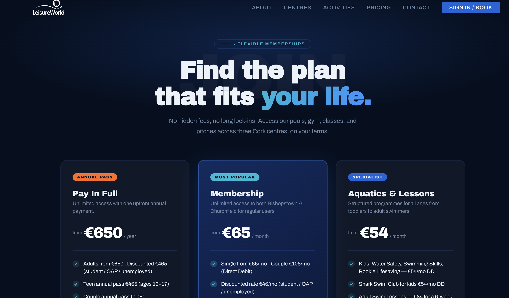

Swim School buried three levels deep in the nav, split across four unlinked pages.



Swim School promoted to a top-level nav item with its own dedicated, single-scroll page.
LWv4
TL;DR
LeisureWorld Cork is a health, fitness, and recreation provider operating three centres across Cork. As a self-initiated UI/UX case study, I evaluated the existing website to identify usability issues and user pain points affecting key user journeys.
Using a user-centred design process, I redesigned the experience with improved navigation, information architecture, and accessibility before developing the solution as a fully custom, responsive website using HTML, CSS, JavaScript, PHP, and Bootstrap.
See the GitHub repo →Background
An outdated experience that created unnecessary friction
The existing LeisureWorld Cork website no longer met users' expectations. Its maze-like navigation, cluttered information architecture, and inconsistent content made it difficult for visitors to locate essential information, creating frustration and reducing the overall usability of the site.
Problem
Four key usability issues identified through stakeholder interviews
To understand the existing experience, I conducted interviews with customers, front-line staff, and back-office stakeholders. These conversations revealed four recurring usability issues that affected both users and the organisation.
Hover cards to exploreMaze-like navigation
Users found it difficult to navigate the website and locate key services due to a confusing information architecture.
Disruptive pop-ups
Frequent and unnecessary pop-ups interrupted users' journeys, creating friction and reducing engagement.
Poor visibility of core services
Participants consistently highlighted that the Swim School — LeisureWorld's core service — was difficult to find and lacked clear, comprehensive information.
Duplicate and inconsistent content
Staff explained that similar information existed across multiple pages, making content difficult to maintain and leading to outdated or conflicting information being shown to users.
The redesign had one guiding constraint: improve usability by simplifying navigation and content without removing the information users and staff depend on.
User Patterns
Members & Visitors Task-focused engagement
Users visit the website to quickly find information about memberships, swimming lessons, fitness classes, timetables, or facility bookings. They expect clear navigation and fast access to relevant information.
Parents & Families Information-focused engagement
Parents primarily look for details about the Swim School, children's camps, and birthday parties. They need comprehensive, easy-to-find information, including schedules, pricing, enrolment, and FAQs, to make informed decisions.
Process
From research to a user-centred redesign
Restructuring the information architecture
Research revealed that users struggled to navigate the website due to a maze-like structure and duplicated content. I reorganised the information architecture by simplifying navigation, consolidating duplicate pages, and creating a clearer content hierarchy, making it easier for users to find key services.
Prioritising core user journeys
Interview findings showed that users had difficulty locating important services, particularly the Swim School. I redesigned the homepage and navigation to prioritise high-demand services, reduce unnecessary pop-ups, and improve the visibility of key information, resulting in a more intuitive and efficient user experience.
Final Product
A redesign built around what users actually need
Homepage
User goals became the primary focus, reducing clutter and improving content hierarchy. Each section highlights essential information, guiding users towards key services and actions. The rebuild also creates a consistent experience across the wider site.
Swim School
Programmes became the primary content structure, replacing one long information-heavy page. Each pathway now has its own dedicated page with clear levels, goals, and progression details. The rebuild improves wayfinding by allowing users to explore the programme most relevant to them without unnecessary scrolling.
Centre Policies
Policies became organised categories rather than a flat document list. Each card provides essential context before users open a policy, improving scanability and reducing search effort. The rebuild replaces static PDFs with structured, responsive pages that are easier to navigate, read, and maintain.
Design system
Built for consistency across pages, clean handoff, and future iteration.
Impact
Rebuild in progress
The proposed redesign was validated with key stakeholders, who supported the new structure and are working towards an MVP launch. The rebuild focuses on improving discoverability, reducing user friction, and creating a more scalable foundation for future updates.
I led the UX and development process end-to-end, translating research findings into a redesigned digital experience currently being prepared for release.
Reflections
What this project reinforced
Designing around real user needs, not assumptions
This project reinforced the importance of understanding how different users interact with a service. Speaking with customers, staff, and stakeholders highlighted that usability issues were often connected to wider organisational challenges, such as duplicated content, unclear ownership, and outdated structures. Research helped shift the focus from simply redesigning screens to improving the overall user journey.
Simplifying without losing important information
A key challenge was balancing simplicity with the amount of information LeisureWorld needs to provide. The goal was not to remove content, but to restructure it so users could find relevant information more easily. This reinforced the importance of information architecture as a foundation for good UX.
The importance of validation before launch
While stakeholder feedback confirmed the direction of the redesign, further validation with real customers will be essential before the final launch. Usability testing with members, parents, and visitors would help identify any remaining friction points and ensure the new experience supports real user goals.